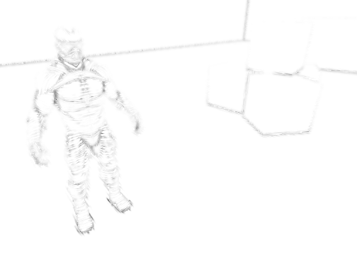

Figure 1: Generic shading.
Figure 2: Cel shading.

Figure 3: Rendering ambient occlusion with hatching.
Figure 4: Rendering everything with hatching.
Figure 5: Rendering only shadows with hatching.
I was very successful with respect to my technical goals. Despite the breadth of the project (building a rendering engine from scratch and implementing multiple different shader pipelines) I finished every technical goal I put forth in my project proposal.
That said, I quickly realized that my initial goal of rendering hatching with SSAO produced unsatisfactory results. This is partly because the rendered hatching is rarely parallel to the creases it aims to accentuate. This ends up creating a strange 'hairy' effect that doesn't agree with either conventional shading or cel-shading (see figure 3). In addition, I also realized that cel-shading looks strange when used with point lights (see figure 2).
Because my initial method didn't work as I had hoped, I took what I learned and came up with a new idea: rendering shadows with hatching (see figure 5). This results in a cartoony, crayola style rendering that, I think, succeeds in my general goal: to use real-time hatching in a way that does not overburden the viewer with detail.
The general rendering pipeline (excluding shadow mapping) involves 6 rendering passes (only one of which involves rendering geometry). The rendering pipeline (excluding shadow mapping) renders at 60 frames per second on my 2014 MacBook Air. Because computing the shadow maps is expensive as it requires rendering 6 frame buffers per point light, I render and cache the shadow maps once.
Note: As this was a prototype of a rendering style, I did not optimize my engine for efficiency.
As you recall, my goal with this project was two-fold:
My initial method of rendering SSAO with hatching was not promising. The artistic style I aimed to mimic (which uses ink hatching to add detail to otherwise sparsely detailed scenes) adds detail in image-space. The real-time hatching algorithm I use, in contrast, adds detail in object-space. I had hoped that by using SSAO, which adds detail in image-space, I could create a compromise between the two (see figure 3). Unfortunately, this ended up with object-space hatching being added to small details in image-space. Thus, there was no coherence between the hatching patterns and how the patterns were being placed.
The alternative renderer that I created, which renders shadows with hatching (see figure 5), does not have this coherence problem. I think this renderer looks great (especially if combined with a cartoony scene). However, it doesn't satisfy the first goal nearly as well as I hoped my initial method would.
In the future, I'd like to work more on the first goal of rendering detail with pen-strokes. I think that any future algorithm of this sort would probably involve some kind of image-space drawing rather than object-space hatching. It's possible, for example, that I could draw pen-strokes in image-space and alleviate the problem of object-space coherence by generating a gradient describing the movement of objects in image-space.